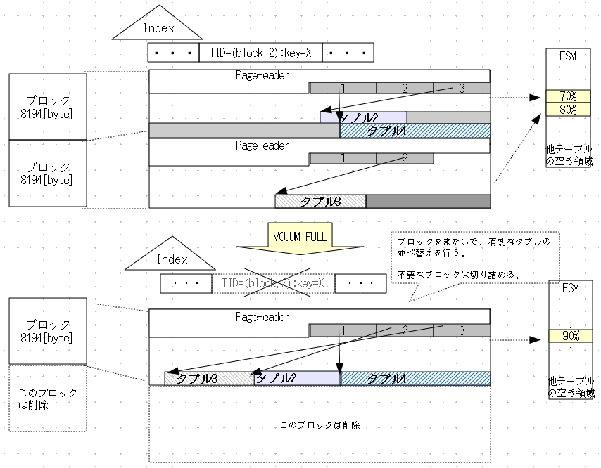
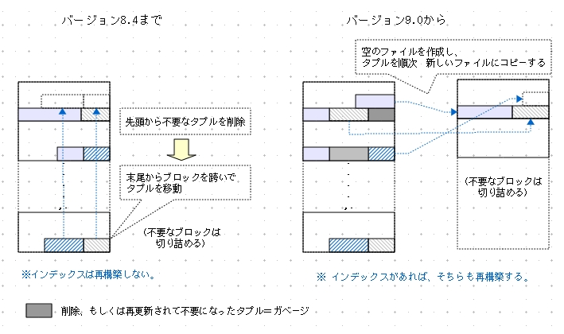
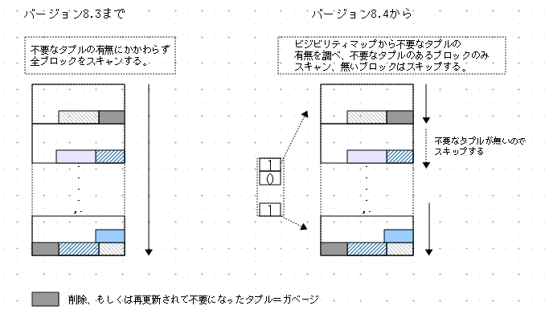
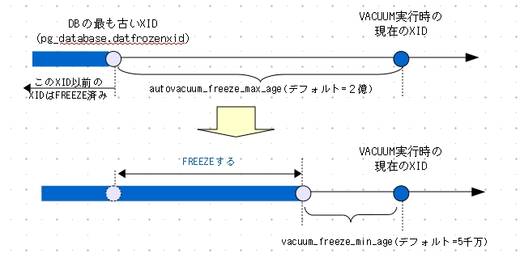

VACUUM
今読むと記述が甘い。間違いもある。
不要なタプルを回収するVACUUM処理には「CONCURRENT VACUUM」と「FULL VACUUM」の２つのモードがあります。
以下、CONCURRENT VACUUMを単にVACUUMと呼ぶことにします。
VACUUMはブロック単位で不要なタプルの削除と有効なタプルの並べ替えを行います。
ブロック毎の削除なのでファイルサイズは変わりません。
VACUUM FULLはファイル全体で不要なタプルの削除と有効なタプルを並べ替えを行い、可能ならばファイルサイズを切り詰めます。よって、大量データを削除した後にVACUUM FULLを実行するとテーブルのファイルサイズを縮小できます。
以下、VACUUMとVACUUM FULLの動作を説明します。
また、バージョンが進むにつれてVACUUM処理効率化の機構が順次追加されたので、それらについても説明します。
VACUUM
(CONCURRENT) VACUUM処理の概要を以下に示します。
- (ShareUpdateExcusiveLockをかけて)テーブル毎に以下の処理を行う：
- ブロック毎に以下の処理を行う：
(1)(インデックスがあれば)インデックスを削除
(2)不要なタプルを削除
(3)有効なタプルを並べ替え
(4)(後述する条件に合えば)FREEZE処理
(5)空き領域マップ(FSM)の更新
- pg_classのrelpageやreltuplesなどの統計情報を更新する
- 全テーブルの処理後、CLOG(コミットログ)を更新(古くFREEZEされたXIDの情報を削除)
テーブル毎にShareUpdateExcusiveLockをかけるので、VACUUM処理中も他のトランザクションからテーブルが読み取り可能です。
対象とするテーブルのブロックを上から順にスキャンし、ブロック内の不要なタプルを掃除します。
以下、ひとつのテーブルを例にVACUUM処理を図解します([<図2-33>])。
[<図2-33>]の上部は、テーブルの２つ目のブロックに対してVACUUM処理を行う直前の状態です。
この状態から以下の処理を行います。
(1) (もしも削除対象のタプルを指しているインデックスがあれば)インデックスも削除する
(2)不要なタプルを削除する
(3)有効なタプルを並べ替えして空き領域を確保する
(4)FREEZE処理を行う
(5)空き領域マップ(FSM)の更新
ブロック内のタプルの掃除が終ったら、空き領域マップ(FSM)の該当ブロックの値を更新する([<脚注21>])。
実際は効率化のため、ある程度の削除タプルやインデックスを集めてから処理することを繰り返します。
ここで、削除タプルを指していたラインポインタは未使用になることに注意してください。ラインポインタは回収せずに残して、次のタプル追加で再び使用します。
このような処理を繰り返してすべてのテーブルの処理を終えたら、最後にCLOG(コミットログ)を更新(古くFREEZEされたXIDの情報を削除)してVACUUM処理は完了します。
| 脚注21 |
FSMについては、[<2-02>]と[<2-06>]でも触れています。
|
VACUUM FULL
2つのブロックからなるテーブルを例にVACUUM FULLを説明します。
処理の概要は(CONCURRENT) VACUUMとほとんど同じですが、2つの大きな違いがあります。
- VACUUM FULLはAccessExclusiveLockをかける
対象となるテーブルの処理中、他のユーザは読み書き不可になる。
- ブロックをまたいで有効なタプルの並べ替えを行う
有効なタプルが少なければ不要なブロックを切り捨ててファイルサイズを小さくすることもある。
また、ブロック内のラインポインタは張り直されて、各タプルは新たなTIDが割り振られる。
[<図2-34>] VACUUM FULL

|
VACUUM FULLの比較
バージョン8.4以前と9.0以降のVACUUM FULLを比較します。
[<図2-35>] VACUUM FULLの違い

|
バージョン8.4までのVACUUM FULLは、
テーブルファイルはそのままにブロックの先頭から不要なタプルを削除し、
次いで末尾からブロックを跨いでタプルを移動します。末尾のブロックが空になったらファイルサイズを切り詰めます。
このテーブルに張ってあるインデックスは再構築しません。
よってVACUUM FULL後は、
インデックスとテーブルブロック内のタプルに捩れが生じます。
大雑把にいえば、
インデックスを順方向に連続でスキャンしても、
対応するタプルはいくつものブロックに不連続に配置されている可能性が高まります。
バージョン9.0から、新たにファイルを作成してデータをコピーする方式に変わりました。
また、関連するインデックスの再構築も同時に行います。
ただし、運用の観点からするとあまり好ましくないのですが、
全テーブルの削除はVACUUM FULL処理の最後にまとめて行うので、
一時的にせよデータベースクラスタの容量が２倍程度に膨れあがってしまいます。
よってバージョン9.0以降は、VACUUM FULLの実行前にディスクの空き容量確認が必須です。
| コラム2-7：VACUUMのメリット |
追記型MVCCにはVACUUM処理が不可欠ですが、
初期のPostgreSQLはVACUUMを手動で行わなければならなかったので「PostgreSQLは運用が面倒」と、悪評の元になっていました。
ところで、OracleもMySQLのInnoDBストレージエンジンも、
データ領域は単調増加するばかりで絶対に減少しません。
物理バックアップにかかる時間はデータ領域の大きさに比例するので、
運用期間が長くなるにつれて物理的なフルバックアップ時間が増大し、運用に支障をきたすこともあります。
データ領域内部のデータは古すぎるデータを削除するなどハウスキーピングを行えばよいですが、
データ領域そのものが大きくなりすぎた場合の通常の対処法は、運用を止めてダンプデータから改めてデータベースを再構築するしかありません。
これに対し、PostgreSQLはVACUUM FULLによって、物理的なデータ領域も必要最小限の大きさに削減できます。
例えば古いデータを大量に削除した後にVACUUM FULLを実行すれば、データ領域を縮小できます。
|
VACUUM処理の効率化
VACUUM処理は非常にコストのかかる処理です。よって性能低下を避け、効率を高める工夫がなされています。
- VACUUMの遅延機能 (バージョン8.0から)
VACUUM処理時の性能低下を抑制する。
- AUTOVACUUM機能 (バージョン8.1から)
サーバ管理者の手を借りずに、定期的にVACUUM処理に行う。
- ビジビリティマップ(Visibility Map)を利用したVACUUM処理の効率化(バージョン8.4から)
ビジビリティマップでブロック(ページ)毎にVACUUM処理を行う必要があるか否か判断する。処理が不要なブロックを無視することでVACUUM処理全体の効率が向上する。
なお、バージョン8.3のHOT(Heap Only Tuple)に併せて実装された機能(通常のSQLコマンド実行中に不要タプルを削除する)によって、VACUUM処理そのものの必要性が劇的に低下しました。この機能については[<2-08>]で詳説します。
VACUUMの遅延機能
VACUUMの遅延機能とは、VACUUM処理中に検索や更新が多く行われているならば、指定した時間だけVACUUM処理を休止する機能のことです。
なお、この機能はデフォルトで無効です。利用する場合は設定パラメータvacuum_cost_delayに1以上の値を設定しなければなりません。
疑似コードを使い、VACUUM処理の遅延機能について説明します。
| [<バッファの利用状況に応じたコスト加算>] |
[<コストをしきい値とする処理遅延>] |
while (true) {
/*------------------------------------------------------------
* バッファの利用状況に応じて、大域変数VacuumCostBalanceに加算
* ソースコード'src/backend/storage/buffer/bufmgr.c':
* ReadBuffer(), write_buffer()
------------------------------------------------------------*/
if (バッファ上でキャッシュにヒット)
VacuumCostBalance += vacuum_cost_page_hit;
if (バッファ上でキャッシュミス)
VacuumCostBalance += vacuum_cost_page_miss;
if (バッファ上のデータの書き込みが必要となった)
VacuumCostBalance += vacuum_cost_page_dirty;
}
}
|
while (VACUUM,もしくはANALYZE 処理中) {
/*------------------------------------------------------------
* vacuum処理中のモニタリング
* ソースコード'src/backend/command/vacuum.c': vacuum_delay_point()
------------------------------------------------------------*/
/* 累積コストが vacuum_cost_limit を超えているか */
if (VacuumCostBalance > vacuum_cost_limit) {
/* VACUUM, もしくはANALYZE処理を一時、休止 */
sleep (vacuum_cost_delay);
/* 累積コストを0にリセット */
VacuumCostBalance = 0;
}
}
|
VACUUM処理中、共有バッファの読み取りや書き込みに応じて、設定パラメータvacuum_cost_page_hit, vacuum_cost_page_miss, vacuum_cost_page_dirtyの値を大域変数VacuumCostBalanceに累積加算します。
もしもVacuumCostBalanceの値が設定パラメータvacuum_cost_limitの値を超えた場合は、vacuum_cost_delayに設定された時間(単位はミリ秒)だけ、VACUUM処理を休止します。休止後はVacuumCostBalanceの値は0にリセットします。
この機構によってデータの読み書きが多い場合はVACUUM処理が一時的に休止します。
AUTOVACUUM
バージョン8.1でAUTOVACUUMが実装され、PostgreSQLの運用は格段に容易になりました。
AUTOVACUUMのlauncherプロセスはパラメータautovacuum_naptimeに設定された周期(デフォルトは60秒)で、postgresプロセスにworkerプロセスの起動を依頼します。
postgresプロセスはパラメータautovacuum_max_workersの数だけworkerプロセスを起動します。起動したworkerプロセスはいくつかの設定パラメータで指定した割合のVACUUM処理をした後に終了します。
AUTOVACUUMの設定パラメータは[<4-10>]を参照してください。これらのパラメータによってバックグランドで実行するAUTOVACUUM処理が過負荷にならないよう調整します。
なお、稼働統計情報のpg_stat_all_tablesで、テーブル毎のAUTOVACUUMが実行された回数や最後に実行した時刻を確認できます([<3-15>]参照)。
ビジビリティマップ(Visibility Map)を利用したVACUUM処理の効率化
ビジビリティマップ([<2-06>])はブロック内のすべてのタプルが可視かどうかの情報を保持しています。
「すべてのタプルが可視」ということは、すなわち「不要なタプルはひとつも含まれていない」ということです。
バージョン8.4以降はビジビリティマップを利用して、不要なタプルを含むブロックのみVACUUM処理を行うよう改良されました。
[<図2-36>] ビジビリティマップを利用したVACUUM処理の効率化

|
FREEZE処理とXIDの周回防止
FREEZE処理を非常に簡単に説明すると、長期間更新されないでデータブロックに留まっているタプルのt_xminにFrozenTransactionXIDである"2"を代入する処理です([<脚注22>])。
| 脚注22 |
他にもinfomaskにHEAP_XMIN_COMMITTEDをセットするなどいくつか処理を行いますが、ここでは触れません。
|
VACUUM実行時のFREEZE処理について、簡単に手順を示します。
- DB毎にFREEZEしていない最古のXID(pg_database.datfrozenxid)と現時点のXIDの差を求める。
- その差がautovacuum_freeze_max_age(デフォルトで2億)以上になったら、vacuum_freeze_min_age(デフォルトで5千万)以前のt_xminを持つタプルをFREEZEする。
[<図2-37>] DB毎のAUTOVACUUMによるFREEZE処理の起動タイミング

|
DB毎の最古のXIDはシステムカタログpg_databaseのdatfrozenxidに保存してあります。
PostgreSQLはこの方法でXIDの周回問題を回避しますが、さらに次の対策を講じています。
- 残り1000万トランザクションで警告
- 残り100万トランザクションでエラーとなり、新しいトランザクションを受け付けない
バージョン8.4から追加されたFREEZE処理の起動条件
上記の方法でVACUUM処理とともにFREEZE処理も実行できましたが、
ビジビリティマップの登場で状況が変わってしまいました。
前述のようにVACUUM処理効率化のため、ビジビリティマップを参照して変化のないブロックのVACUUM処理をスキップするようになりました。
しかし、変化のないブロックほど古いXIDが隠れています。
つまり効率化によって、FREEZEすべき古いXIDのタプルがVACUUM処理から漏れるようになったのです。
この問題への対処として、設定パラメータvacuum_freeze_table_ageが導入されました。
動作は上のautovacuum_freeze_max_ageと同じで、テーブル毎に最古のXIDを調べ(pg_class.relfrozenxid)、
現在のXIDとの差がvacuum_freeze_table_age(デフォルト=1.5億)以上ならば、
ビジビリティマップを無視してテーブル全体のブロックを検査してFREEZE処理を行います。
| コラム2-8:不要なタプルの確認 |
稼働統計情報で不要なタプル数を確認できます。
バージョン8.3以降ならばpg_stat_all_tablesのn_dead_tupで、テーブル毎の不要になったタプル数がわかります。
もしも長時間、n_dead_tupが残ったままならAUTOVACUUM関連の設定パラメータを見直すなど対応が必要です。
sampledb=# -- http://lets.postgresql.jp/documents/technical/statistics/2 笠原氏のクエリを改変
sampledb=# SELECT relname, n_live_tup, n_dead_tup,
round(n_dead_tup*100/(n_dead_tup+n_live_tup), 2) AS dead_ratio,
pg_size_pretty(pg_relation_size(relid)) FROM pg_stat_user_tables
WHERE n_dead_tup > 0 ORDER BY dead_ratio DESC;
relname | n_live_tup | n_dead_tup | dead_ratio | pg_size_pretty
------------------+------------+------------+------------+----------------
pgbench_branches | 50 | 20 | 28.00 | 8192 bytes
pgbench_tellers | 500 | 11 | 2.00 | 48 kB
pgbench_accounts | 708182 | 3 | 0.00 | 181 MB
(3 rows)
バージョン8.2以前ならcontribのpgstattupleで不要になったタプル数がわかります。
インストール方法は次のとおりです。
postgres> cd contrib/pgstattuple
postgres> make && make install
設定用のバッチファイルpgstattuple.sqlを実行すれば、以降は次のようにして不要になったタプル数などがわかります。
sampledb=# \i /usr/local/pgsql/share/contrib/pgstattuple.sql
sampledb=# SELECT tuple_count,dead_tuple_count,dead_tuple_percent
sampledb-# FROM pgstattuple('accounts');
tuple_count | dead_tuple_count | dead_tuple_percent
-------------+------------------+--------------------
100000 | 40 | 0.03
(1 row)
|
参考文献
- PostgreSQL解析資料 VACUUMの実装 井久保氏
http://ikubo.x0.com/PostgreSQL/pdf/IK14_vacuum.pdf
Last-modified: 2018-9-8